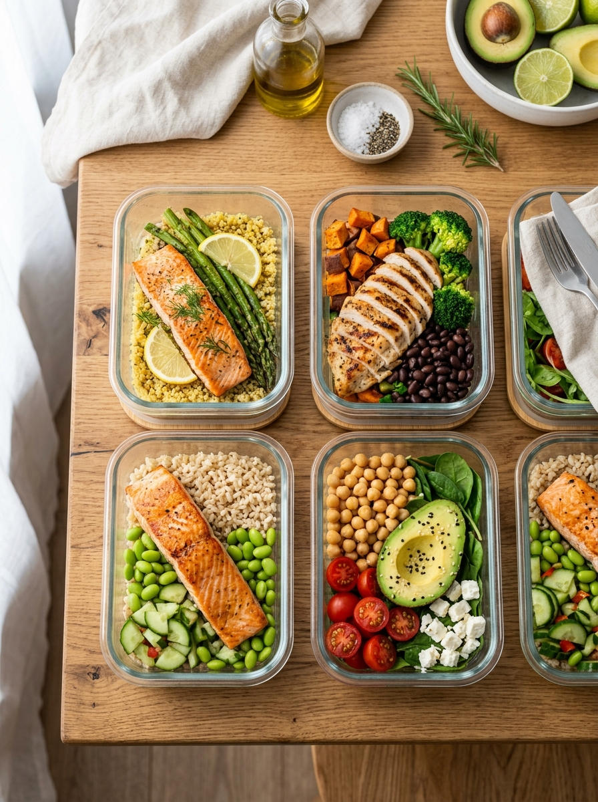
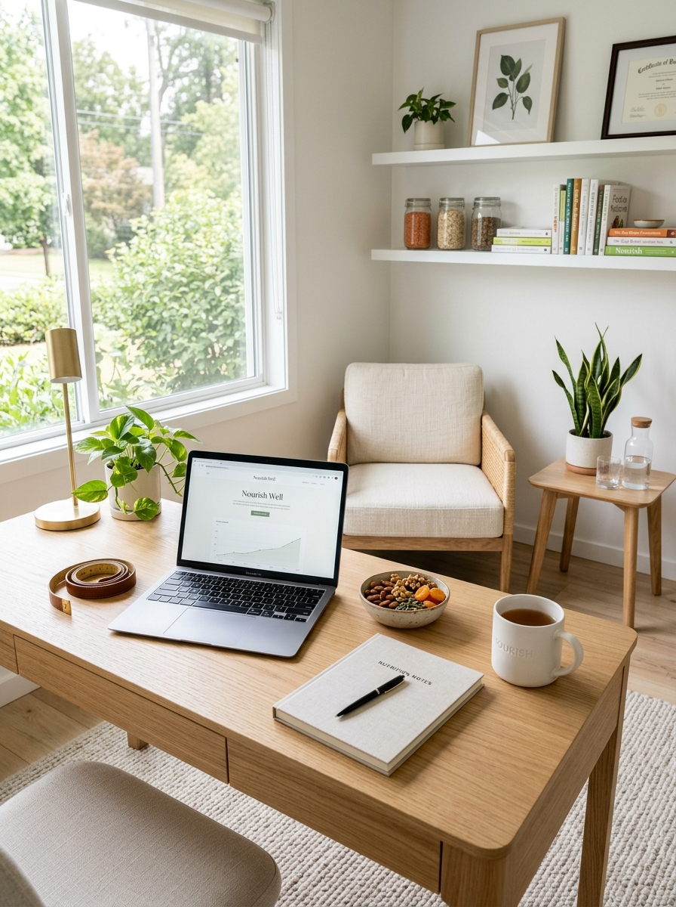
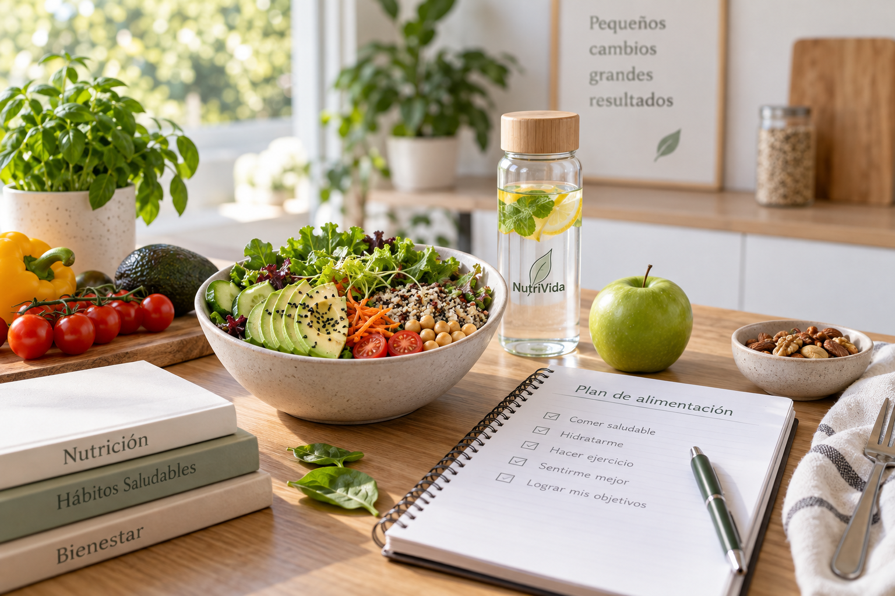
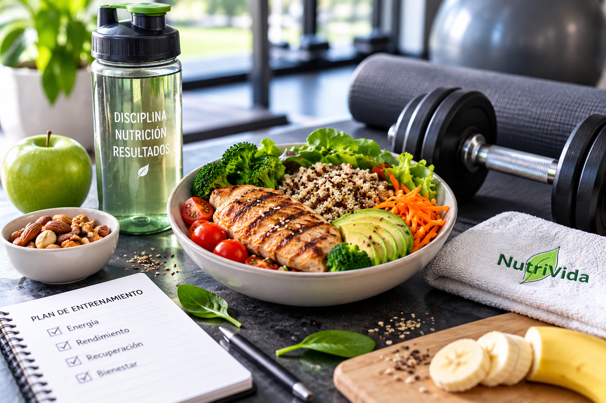
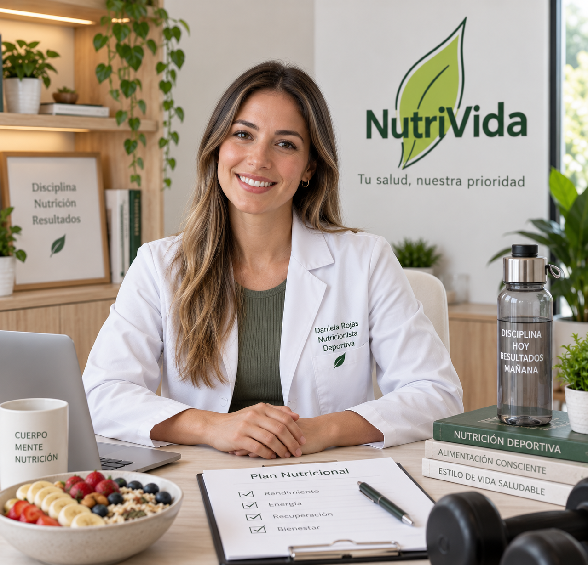
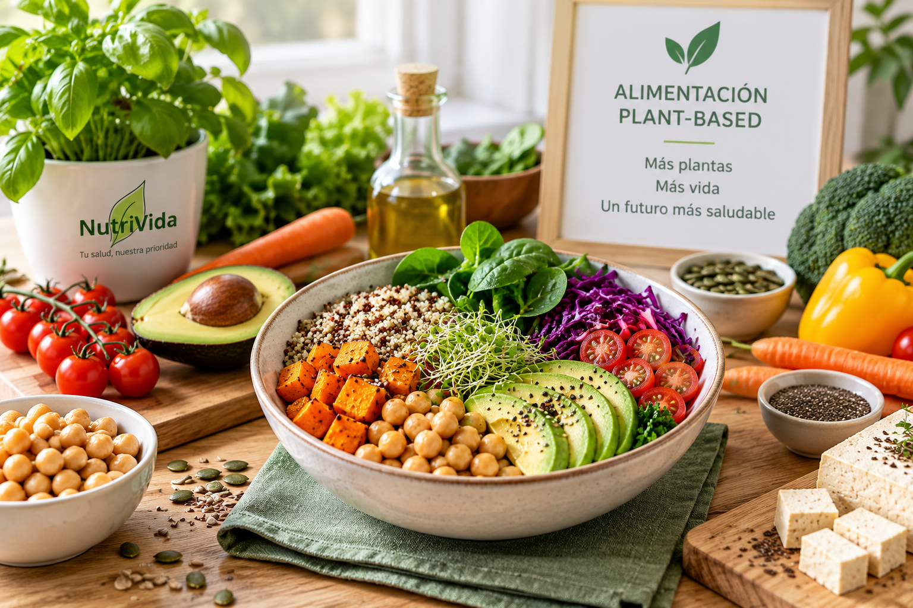
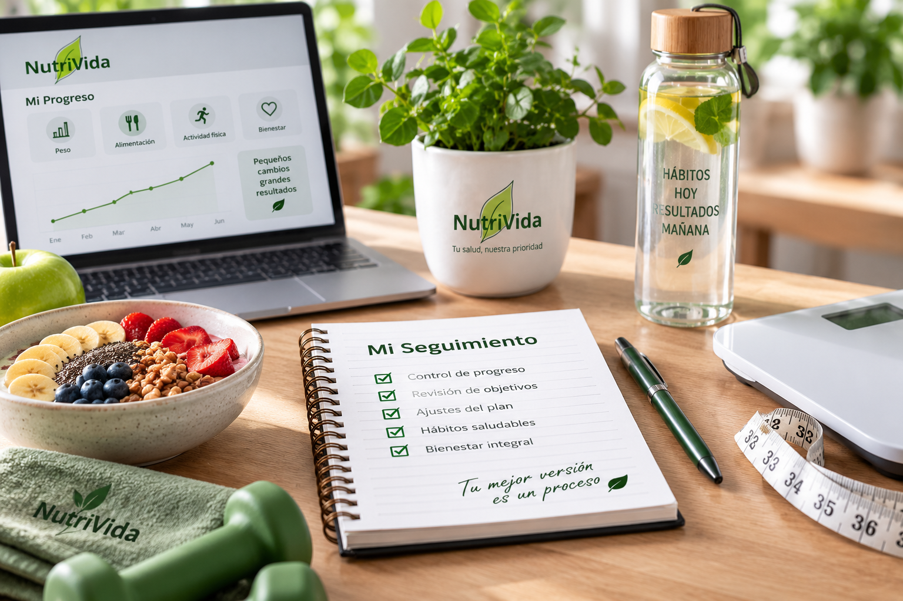

Camila Soto
Nutrición Clínica y Control de Peso
SERVICIOS NUTRICIONALES
Conoce qué incluye cada alternativa y los profesionales que pueden acompañarte.
Volver a Servicios
PLAN COMPLETO
Servicio pensado para personas que desean comenzar un proceso nutricional con evaluación, planificación y seguimiento.
Nutrición Clínica y Control de Peso
Nutrición Vegetariana y Vegana
$35.000
Este plan ofrece mayor acompañamiento que una consulta individual, ya que incluye seguimiento y ajustes durante el proceso.

PRIMERA ATENCIÓN
Primera evaluación destinada a conocer hábitos, antecedentes y objetivos del paciente.
Nutrición Clínica
Nutrición Clínica y Metabólica
$20.000
Esta consulta es ideal para comenzar. Después de la evaluación, el profesional puede orientar al paciente hacia un plan específico.

HÁBITOS Y OBJETIVOS
Plan orientado a trabajar objetivos relacionados con el peso y mejorar hábitos alimentarios.
Control de Peso
Nutrición Metabólica
$29.000
El objetivo es realizar cambios progresivos en la alimentación y revisar la evolución del paciente durante los controles.

ACTIVIDAD FÍSICA
Servicio especializado para personas que realizan actividad física y desean organizar su alimentación según sus entrenamientos.

Nutrición Deportiva
$32.000
El plan considera el tipo de actividad, frecuencia de entrenamiento y objetivos de cada persona.

ALIMENTACIÓN BASADA EN PLANTAS
Orientación para personas que siguen o desean comenzar una alimentación vegetariana o vegana.
Nutrición Vegetariana y Vegana
$30.000
La planificación considera las preferencias alimentarias y necesidades individuales de cada paciente.

CONTINUIDAD
Servicio para pacientes que ya realizaron una evaluación inicial y necesitan revisar su evolución.
Nutrición Clínica
Nutrición Vegetariana y Vegana
$24.000
Este servicio cuesta menos porque está dirigido a pacientes que ya cuentan con una evaluación y un plan previo.